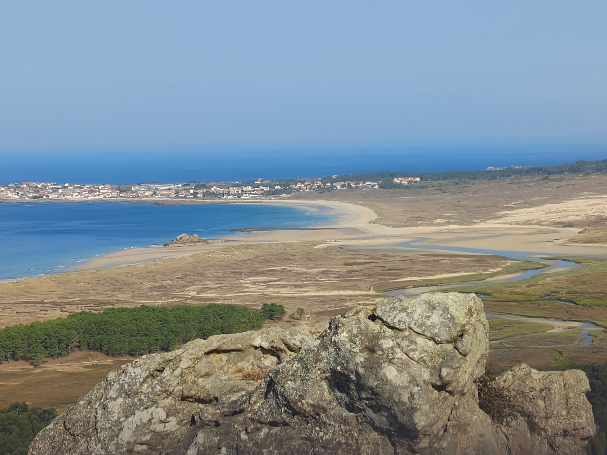
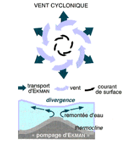

Portafolio personal, Proyecto para la clase de Lenguaje de Marcas.
Flora Corrubedo
Web divulgativa sobre distintas plantas y algas que se puede encontrar en el Parque natural de las Dunas de Corrubedo y lagunas de Carregal y Vixán asi como distintas caracteristicas de cada uno. Proyecto en construcción.
Transporte de Ekman
Web gráfica para explicar el motivo por el que se producen afloramientos oceanicos lejos de las costas como consecuencia del choque de dos masas de agua de distinta densidad, siguiendo la teoria del oceanógrafo sueco Vagn Walfrid Ekman. Proyecto en construcción.
-Grado en Ciencias del Mar.
-Actualmente estudiando: Grado Superior Desarrollador de Aplicaciones Multiplataforma.
-Experiencia como Agente gestión de fraude en Abanca.
-Experiencia como Auxiliar de servicio administrativo en Abanca.
Como todo el mundo, tengo mis aficiones, alguna de ellas es cocinar, ya que me encanta probar distintos platos y mejorar las recetas que puedo hacer, actualmente estoy enfocandome mas en la reposteria. Otra de mis aficiones favoritas es la lectura, especialmente dentro de los géneros de fantasia y ciencia ficción, donde he leido algunas novelas muy interesantes como "La Rueda del tiempo", "Canción de Hielo y fuego", "Nacidos de la Bruma", "Dune", "El Archivo de las tormentas"... Actualmente me encuentro sumergido en la trilogía de "La Primera Ley".
Puedes contactar conmigo en los correos:
alejandro27@gmail.com
alex.marlob@outlook.com